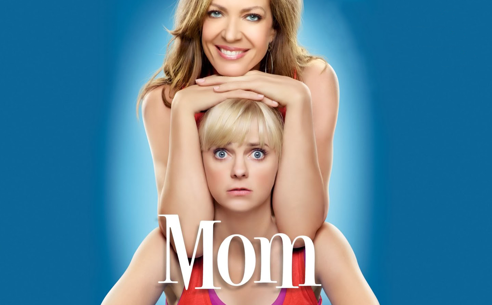

Mom
Watch Thursdays at 8:30/7:30c on CBS
Anna Faris and Emmy® winner Allison Janney star in a new comedy from Chuck Lorre (The Big Bang Theory, Two and a Half Men, Mike & Molly).
Anna Faris plays Christy, a single mom whose newly found sobriety has given her the ability to see her life clearly... and she does not like the view. Now she must try to untangle years of reckless decisions in order to make a better life for her and her kids. But she discovers that just because you want to be a better person doesn't mean it's going to be easy.
Everywhere she looks there are challenges: She is trying to stop drinking in wine country, have a healthy romance with her unavailable boss, raise her young son to be a good man despite his father's influence, convince her troubled teenage daughter to make better choices than she did, and—perhaps the most difficult task—forgive her estranged mother, Bonnie (Janney), for not giving her any of the tools she needed to handle life in the first place.
Cast
Christy Plunkett
Bonnie Plunkett
Violet Plunkett
Baxter
Chef Rudy
Luke
Roscoe
Seasons
Season 1
1. "Pilot"
2. "A Pee Stick and an Asian Raccoon"
3. "A Small Nervous Meltdown and a Misplaced Fork"
4. "Loathing and Tube Socks"
5. "Six Thousand Bootleg T-Shirts and a Prada Handbag"
6. "Abstinence and Pudding"
7. "Estrogen and a Hearty Breakfast"
8. "Big Sur and Strawberry Lube"
9. "Zombies and Cobb Salad"
10. "Belgian Waffles and Bathroom Privileges"
11. "Cotton Candy and Blended Fish"
12. "Corned Beef and Handcuffs"
13. "Hot Soup and Shingles"
14. "Leather Cribs and Medieval Rack"
15. "Fireballs and Bullet Holes"
16. "Nietzsche and a Beer Run"
17. "Jail, Jail and Japanese Porn"
18."Sonograms and Tube Tops"
19. "Toilet Wine and the Earl of Sandwich"
20. "Clumsy Monkeys and a Tilted Uterus"
21. "Broken Dreams and Blocked Arteries"
22. "Smokey Taylor and a Deathbed Confession"
Season 2
1. "Hepatitis and Lemon Zest"
2. "Figgy Pudding and the Rapture"
3. "Chicken Nuggets and a Triple Homicide"
4. "Forged Resumes and the Recommended Dosage"
5. "Kimchi and a Monkey Playing Harmonica"
6. "Crazy Eyes and a Wet Brad Pitt"
7. "Extra Mashed Potatoes and a Drunk Clown"
8. "Free Therapy and a Dead Lady's Yard Sale"